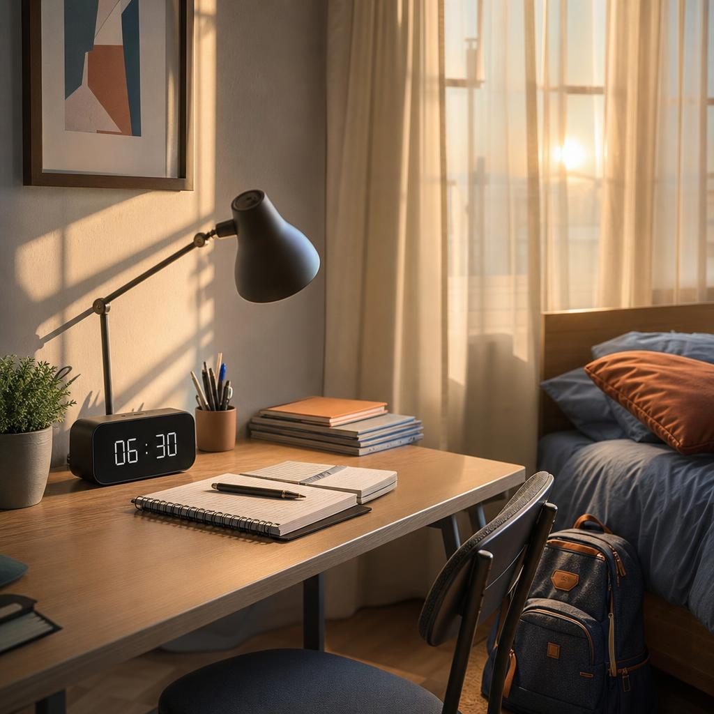
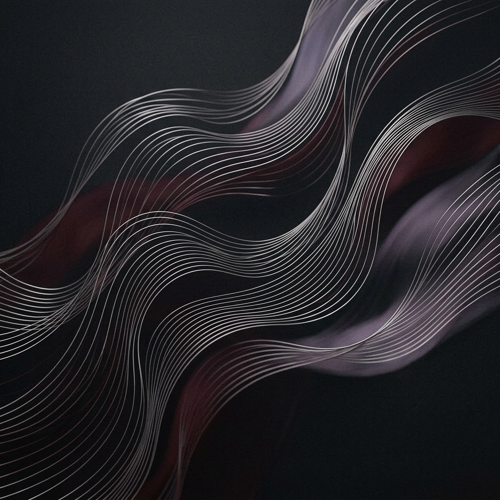

01LIFE NOTES01 NOTES FROM MY WORLD ONLINE / FIGURING IT OUT
HELLO, I'M AZIZJON
MY WORLDBY AZIZJON.
A personal space for everyday life, digital experiments, little discoveries, and ideas I want to bring to life.
Curious by default.
Always learning, making, improving.
A THOUGHT FOR TODAY
“Small steps can take you somewhere unexpected.”
— Azizjon
RIGHT HERE, RIGHT NOWGOOD THINGS TAKE TIMEA PERSONAL JOURNAL
LIFE / TECHNOLOGY / CREATIVITYSCROLL TO EXPLORE
CURIOUS BY DEFAULT ✳IDEAS INTO PROJECTS ✳LEARN / MAKE / REPEAT ✳SMALL THINGS MATTER ✳CURIOUS BY DEFAULT ✳IDEAS INTO PROJECTS ✳LEARN / MAKE / REPEAT ✳SMALL THINGS MATTER ✳
01—03 THE JOURNAL
A few things worth sharing.
Everyday rhythms, digital experiments, and the little things that make a day feel like mine.
Read from the startBROWSE BY MOOD
My Digital Life: Turning Ideas into Projects
How design and technology help a small idea become something real.
Open storyNo stories in this mood yet. Try another filter.
FRAME 01 / 03Make room for the day.
01 EVERYDAY NOTES
A day with a little rhythm.
A routine is not about making every day identical. It is about finding a rhythm that works.
My day starts at 6:30. At school, my favourite subjects are English, Computer Science, and Russian.
My routine changes during the week: on some days I go to the gym, while on others I attend English lessons. I like having different goals to work towards.
A good routine helps me balance school, learning, and the projects I enjoy. Progress can come from small steps repeated over time.
A.THE DAY IS BUILT ONE STEP AT A TIME.
Next: digital life02 BUILDING WITH IDEAS
Turn a thought into something.
Technology is not only something I use. It is also a way to create.
I enjoy technology, games, design, and programming because they let me turn ideas into something useful. One of my main projects is Ada Payment, created for the Ada Mobile store.
I used AI to help during development, but I designed and configured the system myself. It includes servers, products, sales, analytics, accounts, and detailed customisation. I am proud of the work behind it.
I also have PhotoForge and Asepriid, my pixel art editor. Each project gives me another way to explore what an idea can become.
CURRENTLY EXPLORINGIDEA → PROTOTYPE → REFINE
FRAME 02 / 03Build what you wish existed.

FRAME 03 / 03Find your own frequency.
03 SMALL JOYS
A few things that make me, me.
A mix of entertainment, curiosity, and the freedom to imagine.
Games and music help make my free time enjoyable, but projects are another big source of happiness. I often think of new ideas and wonder how they could become real products.
Sometimes the most interesting part is exploring possibilities, learning something new, and improving a design step by step.
I like that creativity can begin with a small thought and grow into something I can share. For me, that feeling of discovery is a reason to keep experimenting.
A small reminder will appear here.
04 THE VISUAL DIARY
Little windows into the world.
Color, light, and the places where new thoughts start. Tap any frame to open it.
05 YOUR TURN
Let's make this a conversation.
Everyone has a different routine and a different idea waiting to happen.
A good question can start a great idea.
?
QUESTION FOR READERS
If you could create any app, what would it do?
It could solve a small everyday problem, help you learn something, or simply make life more fun.
These two comments are fictional examples created for the school assignment, not real submissions.
EST. IN CURIOSITY✦+
06 A LITTLE CONTEXT
Hi, I'm Azizjon.
I'm an eighth-grade student who enjoys technology, games, music, and creative projects.
I like exploring new ideas and turning them into digital products. From working on Ada Payment to exploring other project ideas, I enjoy the process of shaping, testing, and improving something of my own.
This blog is a small window into my everyday life: the subjects I enjoy, the things I create, and what inspires me to keep learning.
01 / LEARNEnglish · Computer Science · Russian
02 / CREATEDesign · Programming · AI-assisted ideas
03 / EXPLOREGames · Music · New projects
A NOTE TO SELF · 001
LOOKING BACK
Ideas grow when you work on them.
Creating this blog is a reminder that a digital project is more than its final screen. It also includes the choices, experiments, and learning that happen along the way. I want to keep trying ideas, getting better at the things I care about, and turning curiosity into something real.
— Azizjon
SAMPLE READER COMMENTS FICTIONAL EXAMPLES
“I would make an app that helps me organise homework and remember deadlines.”
That would be genuinely useful. A clear plan can make a busy week feel easier to manage.
“I would create a simple pixel-art app where beginners can try making their first sprite.”
I like that idea. Starting with a small canvas makes a creative project feel approachable.